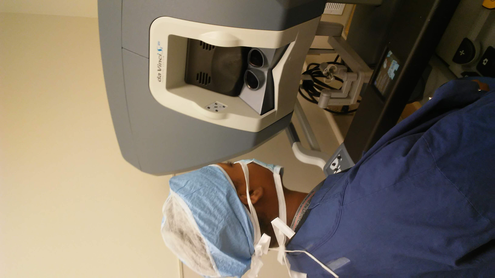
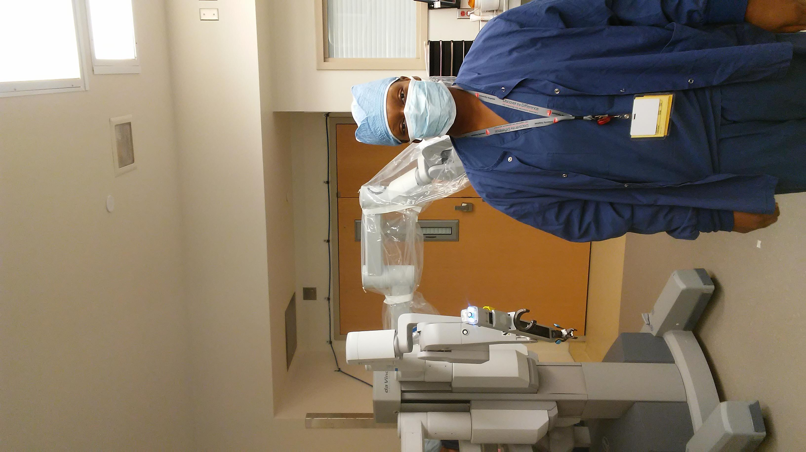
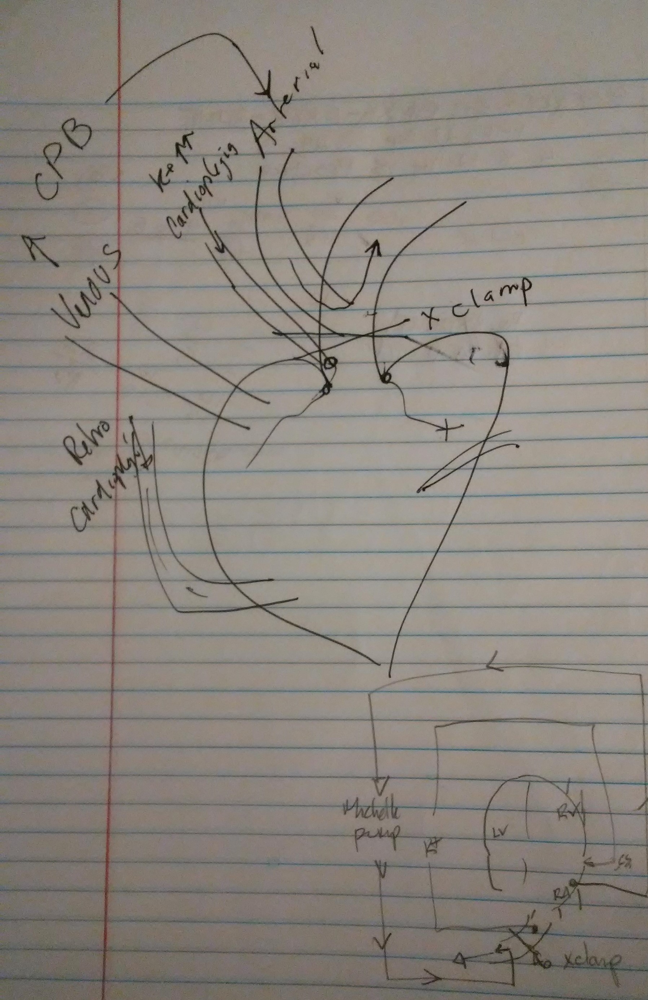

Shadowing:
Anesthesiology
Select a Shadowing Experience to Learn More
A Robotic Supracervical Hysterectomy
This surgery was performed to repair the prolapse and herniation of the uterus and vagina, and the uterus was surgically detached and removed. The robotic assistance allowed for enhanced visualization with magnification and reduced blood loss while being minimally invasive.I learned that being a doctor is not always going to be glamorous or as intense as what is preceived, such as on television shows. However, that does not negate the fact that the doctors are still responsible for someone's life and have an obligation to provide the best patient care they can provide.


Coronary Bypass Graphing
This surgery was performed to redirect blood around a section of a blocked artery in the patient's heart to improve blood flow to his heart muscle. The surgery involved taking a healthy blood vessel from the pateint's arm connecting it beyond the blocked arteries in his heart.I learned that it can be frightening! Not only for the patient but the family. The feelings of the family are just as valid and important, and they are as scared and worried as, if not more then, the patient.
Doctors have fun while being professional
Complacency results in a dangerous situation
Vigilance is key and always know your stuff
Be deliberate and forceful and take-charge when needed (ie. a code).
Echoing orders is needed for proper communication.

The doctors used a x-clamp to stop flow to the heart. From the right aorta, blood is pumped to the rest of the body, while potassium is pumped into the heart to stop it!